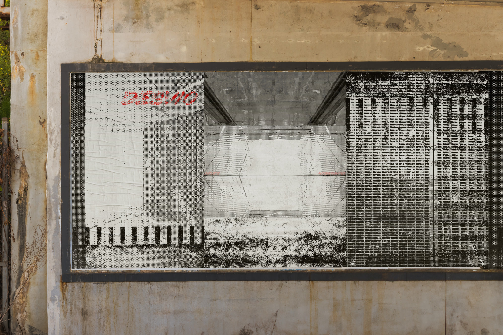
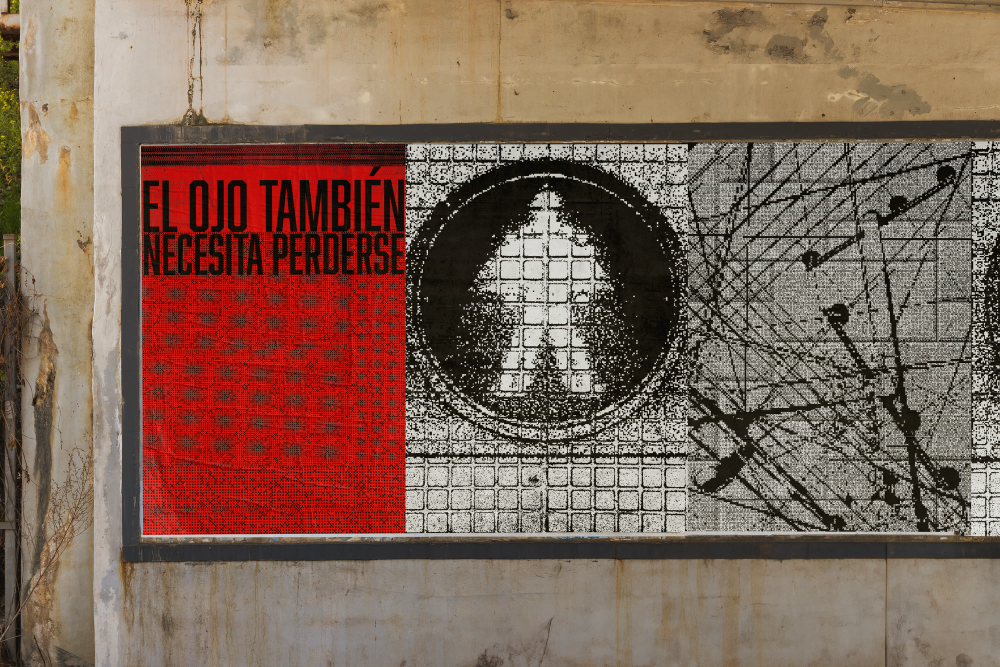

Fuera de Servicio
Fuera de Servicio es un manifiesto y una serie de piezas gráficas desarrollados en colectivo a partir del eje “Ciudad”.


Fuera de Servicio es un manifiesto y una serie de piezas gráficas desarrollados en colectivo a partir del eje “Ciudad”.